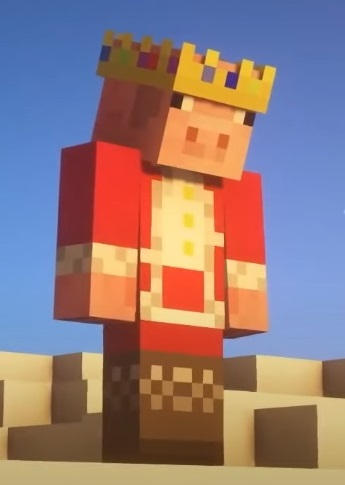

Este site foi feito gentilmente para relembrar todos os atos realizados por um dos, senão o único, melhores jogadores de Minecraft de todos os tempos, e além disso, a pessoa mais legal em todos os aspectos. Estamos falando de Technoblade, que é conhecido por seus atos que provaram sua coroa do começo ao fim.

Technoblade é conhecido por:
Adquiriu uma sequência de 1.400 vitórias em BedWars (Hypixel);
Adquiriu o Rank PIG no Minecraft Monday (Hypixel);
Venceu a Guerra da Batata contra im_a_squid_kid no SkyBlock (Hypixel);
Ganhou a eleição contra Dante e tornou-se prefeito de SkyBlock (Hypixel);
Venceu o Minecraft usando um volante;
Derrotou Dream no PVP.
HISTÓRIA
Sua história começa em outubro de 2013, quando o Technoblade de 14 anos, para se tornar o rei do Minecraft, postou seu primeiro vídeo:
À medida que o adolescente crescia, seu público também crescia, por causa de suas habilidades de jogo excepcionais e humor magnético que fazia com que todas as pessoas que assistiam a seus vídeos simplesmente o amassem até hoje.
No ano de 2017, a Technoblade postou o vídeo: How To Cyberbully Skeppy, onde encontramos a primeira menção no YouTube do que se tornaria a icônica frase "Technoblade never dies" (Technoblade nunca morre) e como o Techno dominou absolutamente o Minecraft, a frase aparentemente literal ganhou força entre seu fandom em rápido crescimento. Ele até surpreendeu seus fãs ao vencer o Minecraft no modo Hardcore usando um volante.
Em 8 de agosto de 2019, Technoblade ultrapassou um milhão de inscritos e e recebeu seu Play Button de ouro, no ano seguinte foi convidado a ingressar no Dream SMP, que conta com um dos melhores jogadores do mundo. Foi aqui que seu refrão frequentemente citado seria sinônimo de sua jogabilidade. As transmissões ao vivo cresceram além do jogo em si, inspirando arte arte baseada nas tramas improvisadas do servidor com tema de dramatização
E mais tarde naquele ano veio um duelo agora lendário. A superestrela do YouTube Mr.Beast desafiou Technoblade e o fundador do Dream SMP, Dream, para uma batalha real frente a frente com o vencedor, o emergente Campeão Supremo de Minecraft do YouTube:
Nos meses seguintes, o canal do Technoblade disparou para mais de oito milhões de inscritos, momento em que sua crescente legião de apoiadores transformou o que era um slogan do criador em um grito de guerra do fandom, perpetuando o slogan
"Technoblade Never Dies", nas mídias sociais, em Comentários do YouTube e até arte dos fãs. Então, de repente, em junho de 2021, a Technoblade desapareceu...
Então, o que aconteceu com o maior jogador do Minecraft? Bem, ele voltou a atualizar seus fãs no vídeo amplamente visto, "where I've been". Technoblade revelou que havia sido diagnosticado com sarcoma, uma forma rara de câncer, o vídeo registrou mais de 15 milhões de visualizações, com mais de 50.000 menções de seu refrão icônico, "Technoblade never dies", aparecendo nas redes sociais. Os fãs reinventaram o mantra para um novo capítulo na história do Technoblade, repetindo-o em apoio ao amado criador do Minecraft. E Technoblade fez questão de compartilhar sua nova jornada com seu público, , Seus apoiadores se reuniram em torno dele com competições e arrecadação de fundos. Através dos esforços da Technoblade, mais de um milhão de dólares foram arrecadados para a Fundação do Sarcoma da America.
Tragicamente, Technoblade sucumbiria à doença, em 13 de junho de 2022, um vídeo final apareceu no canal do Technoblade no YouTube:
A manifestação de dor foi instantânea, tanto seus amigos quanto apoiadores responderam com descrença e raiva, mas eles encontraram saídas criativas para sua dor, e o slogan da Technoblade evoluiu para sua forma final, repetido em homenagem ao legado duradouro do grande Minecraft. jogador. Nos primeiros dias após sua morte, o vídeo final do Technoblade acumulou mais de 125.000 comentários com a frase, "Technoblade never dies".
Desde sua morte, uma média de 300 novos vídeos com a frase no título são postados todos os dias, é como se a comunidade de jogos mantivesse viva a memória de Technoblade para que ele permaneça entre eles, mesmo que apenas em espírito. Antes de sua morte, Technoblade desbloqueou todos os seus vídeos anteriores não listados, criando uma cápsula do tempo de sua vida no YouTube. Assim, com a frase imortal, "Techno Blade lives on" (Techno Blade vive), ele vive em mais de 900 vídeos que continuam a trazer sorrisos aos rostos. Ele vive dentro da comunidade de jogos da qual fazia parte e que continua a apoiar a pesquisa do câncer em seu nome, e vive cada vez que alguém carrega seu primeiro vídeo do Minecraft no YouTube, inspirado pela jogabilidade, o humor e o charme de seu jogador favorito.